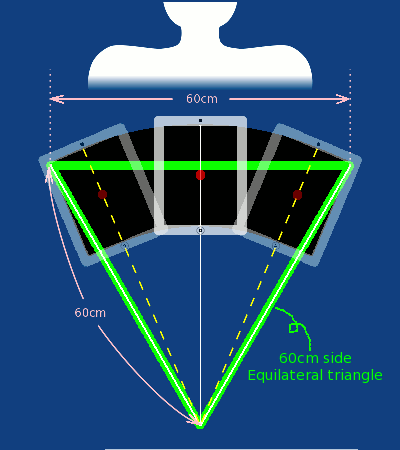

- If you have not seen, see the demo video at the support site.
- For the sign is seen clearly, maximize a brightness setting as follows.
- Double-click the Home button.
- Swipe to the right over the history list at the bottom.
- Drag the brightness slider
 to the max volume.
to the max volume.
- Set by tapping "Pen Color", "Line Cap & Join", and "Line Width", draw a sign in a fan-shaped area by drags.
- You can change properties of these lines by one stroke (a line begin from touch down, and drag, end to touch up).
- You can erase the last stroke and back to the previous state by tapping the "Undo" button.
- You can erase everything you drew by tapping the "Clear" button.
At this point, for understanding the principle and the usage of this application, hold a iPad and face the display side to you, and swing it.
After you understand them, at the next paragraph, turn the iPad display to the person you want to show the sign, and swing it .
- Tap the "Display" button, hold the iPad as portrait style, erect the iPad as a camera is upper, face the display to you, and stretch your arms loosely like you grab a steering wheel.
Then, the center part of the sign you drew is enlarged and showed on the display as fullscreen. - At the first,
it response to a inclination to right or left in realtime, the displayed part of the sign move.
So, if you tilt the iPad slowly to right, the displayed part move to the right edge of the sign.
(We call this state "Async(Asynchronous) state".) - When you tilt a iPad over 10 degree,
at the corner of upper and tilted side, a mark of
 or
or  ("Corner Indicator"s) turn on.
("Corner Indicator"s) turn on.
This time, this application recognize that the iPad was tilted enough to that direction, so, when the indicators turn on alternately, the application recognize the iPad swag round-trip, then record its elapsed time. - For these round-trip elapsed time to satisfy requirements as follows, keep same tempo, check the corner indicators turn on alternately, and swing continuously.
- A round-trip elapsed time of swing is between from 0.5 to 5.0 second. (24 to 240 BPM as one side）
- About continuous tree round-trip, every difference between each time of them and average time of them (tolerance) are within 30 percent.
- For keeping a tempo constantly, you may swing it in time to the music.
Playing the music by iPod built in the iPad, you can use this SwingSign simultaneously.
Or playing a metronome application on your iPhone/iPod Touch, you can swing to that beat note. - [Refer] Application of metronome:
- Name：Metronome (free of charge)
- http://itunes.apple.com/app/metronome/id287965434?mt=8
-
"Sync state"(describe details later) works in a tempo which range is as mentioned above.
But within that range, in too slow tempo, reading the sign takes time.
On the contrary, in too fast tempo, the sign is blurred and reading it is more difficult.
So, in tempo of about 60 BPM as one side = about one time by one second, the displayed sign is easy to read. You may swing to the accompaniment of a second hand of a clock.
For a tune which tempo is over 120 BPM, reduce by half as swing to one side in 2 beat, then the sign will be easier to read. - Though a fan-shaped area which the sign show on is a track of swinging iPad, a radius of swing to its center (= center of iPad) is 50cm. About the width of swing, the track of the display is 30 degree for each side. So, a center of iPad body tilt 23 degree for each side.

- As easy standard, the width of upper-side of swing is 60cm, that is about 5cm over from the breadth of your shoulders each side.
The Width of lower-side of fan-shaped area by swinging is about tree times as long as iPad short side length, so it is about your shoulder width.
Length from top side of the display to a center of rotation of swing is 60cm, so, connecting lines both ends of upper-side of fan-shaped area and the center of rotation, it become an equilateral triangle, which each side length is 60cm.
 - When tempo of swing satisfy requirements as the above, a mark of "Sync" and a right arrow or a left arrow alternately turn on.
(These all together are called "Sync indicator")
These show becoming "Sync(Synchronized) state".
 or
or 
- In Sync state, using a angle which calculated from average tempo of latest tree round-trip swing, move a shown part of the sign.
show swinging from left edge to right direction as you face the display,
is its opposite direction.
Adjust your temp to these arrow indicators, then tempo keeps constant, and the sign is seen as if it stood still in midair. - If the swing is improper, the sign is not seen stopping. No good seen cases happened often and these causes and solutions are as follows.
- Showing sign flows opposite direction to your swing direction. It seems to see longer in vertical.
- => Width of swing is narrow.
Enlarge width of swing to 5cm outside of width of your shoulders.
Oppositely, the sign flows same direction as swing direction, width of swing is too wide, then narrow it. - Rotate letters of sign same direction as swing. If you swing right direction as you face the display, letters turn clockwise. Oppositely, swing left, letters turn counterclockwise.
- => A radius of swing is short.
As the figure above, enlarge the radius until 3 points make an 60cm side equilateral triangle. - The sign shakes side irregularly.
- => The tempo (round-trip elapsed time) of swing is uneven.
Adjust your temp to arrow indicators. Or swing it in time to the rhythm of music or a metronome. - Though you adjust your swing following the above solutions, if the sign seems to see moving, default values of adjust values to a time lag of sensor, a rate of stopping time at swing edges etc. may not fit your tendency of swing.
These value can be changed in "Settings page", refer its "Explanations of Each Part" - When you will stop showing the sign, lay the iPad body horizontal as the display side become upper side. Then the display back to the design page.
- If the latest round-trip elapsed time dose not satisfy requirements as the above, it return to Async state.
Similarly from Async state, if you lay the iPad, it back to the design page, too.
- Normally, in swigging time, the display faces to a person you show a sign. But in that condition, you can not check the situation of the display.
So, limit in practice of swing and checking how the sign be shown, switch "In Mirror (Flip Horizontal)" turn to "On". Then, the sign image flips horizontal. Then you swing it faced to a large mirror, so it will be a mirror of mirror image = original image, you can check the real size swing sign image in same figure as you designed.
- There are 2 styles to swing as follows.
- At the highest position by holding up hands
- Hold both side of under part of iPad, hold up your hands, and swing it sides stretching out your arms.
Adjust a center of rotation of pendulum motion to your nose.

- By this style, the sign is't hardly hidden by a crowd, and it's easy to attract attention, but keeping the style for long time tires your hands.
By swinging with your head together, you can easily check indicators's situation.
Be careful not to hide views of an audience behind you. - At your breast hight
- Hold both side of under part of iPad,
swing it as your hands at your breast hight.
Adjust a center of rotation of pendulum motion to your abdominal region

-
This style can use at a place where your front view is open, e.g. at the stairs-shaped stands seat.
Your fatigue is less than the hold up position. - Be careful with the radius of rotation. It tend to be short (= round track). It's better that you think to swing it straight horizontally.
- Tern off "In Mirror (Flip Horizontal)" button.
- If there is any time to the performance you show it in, you may suspend this app by tapping home button, and use other app. Afterward, tap the SwingSign icon from history list, you can see the sign again at the point you suspend.
- In a case like follows, the sign you drew will be abandoned and the design area will be cleared.
- Delete the SwingSign icon in the history list.
- （by pressing and holding the Sleep button）Turn the iPad completely off, and turn it on.
- When the performance time has come, tap "Display" button, face the display toward the person you want to show, and start to swing it.
- When you get used to using this app, you become to able to swing properly without checking the Corner indicators nor the Sync indicator.
If you think these indicators are eyesores, you can these display always turn off or fade only In Sync.
Moreover, you can set the appearance of the sign to that when in Async state, it turn off, and in Sync state, it turn on.
By these settings, you can show naturally only "the sign that seem to see at a standstill".
Details of these settings, refer "Settings page" of "Explanations of Each Part" .
- When you end swinging it, and back to the design page, you may touch and draw something in the sign area unconsciously.
For to prevent it, press the Sleep button. Then it is locked.
If you drew something in the sign area unconsciously, tap the "Undo" button necessary times, then you can restore previous situation.